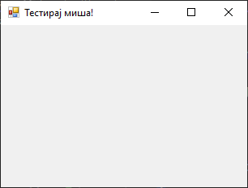
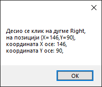

Догађаји миша¶
У Windows Forms App (.NET Framework) пројектима и у GUI апликацијама уопште, догађаји миша играју кључну улогу у интеракцији корисника са апликацијом. Ови догађаји омогућавају апликацији да реагује на различите акције корисника мишем, као што су кликови, померање показивача миша, притисци на дугмад миша и сл.
Пре него што се упознаш са догађајима миша, важно је да знаш називе константи којима се дефинише које је дугме миша притиснуто:
Дугме |
Опис |
|---|---|
Left |
Притиснуто је лево дугме миша. |
Middle |
Притиснуто је средње дугме миша. |
None |
Није притиснуто ни једно дугме миша. |
Right |
Притиснуто је десно дугме миша. |
XButton1 |
Притиснуто је прво специјално дугме миша. |
XButton2 |
Притиснуто је друго специјално дугме миша. |
Специјална дугмад миша представљају два дугмета која се налазе са стране на
мишу Microsoft IntelliMouse Explorer. Данас их поседује већина мишева.
Ове дефиниције дате су у енумерацији MouseButtons Enum у именском простору
System.Windows.Forms, односно склопу System.Windows.Forms.dll.
Основни догађаји миша у Windows Forms App (.NET Framework) пројектима су:
MouseClick- јавља се када се мишем кликне на контролу,MouseDoubleClick- јавља се када се мишем двапут кликне на контролу,MouseDown- јавља се када је показивач миша изнад контроле и када се притисне дугме миша,MouseUp- јавља се када је показивач миша изнад контроле и када се пусти дугме миша,MouseEnter- јавља се када показивач миша уђе у контролу,MouseLeave- јавља се када показивач миша изађе из контроле,MouseHover- јавља се када показивач миша налази изнад контроле,MouseMove- јавља се када показивач миша помера изнад контроле,MouseWheel- јавља се када се точкић миша помера док је контрола у фокусу.
У ранијим примерима дефинисао си догађај клика на форму Click. Може се рећи
да је догађај Click на вишем нивоу апстракције догађаја који се покреће када
корисник кликне на контролу. Он се покреће након што се успешно обраде сви нижи
нивои догађаја као што су MouseDown и MouseUp, и то када су оба догађаја
завршена над истом контролом. Click догађај је користан за већину случајева
када желиш да реагујеш на једноставан клик корисника, без обзира које је дугме
миша притиснуто. Исто важи и за догађај DoubleClick.
С друге стране, догађај MouseClick је догађај нижег нивоа који се специфично
односи на акције миша. Овај догађај се покреће када се догоди низ догађаја
MouseDown и MouseUp над истом тачком на контроли, приликом чега можеш
разликовати које је дугме миша притиснуто. MouseClick догађај је користан
када је потребно да знаш које је тачно дугме мише притиснуто, или када желиш да
имаш додатну контролу над понашањем миша.
Задатак¶
Креирај нови Windows Forms App (.NET Framework) пројекат са једном формом димензија 320×240 и текстом „Тестирај дугмад миша!” у насловној линији форме.

Апликација треба да обавештава порукама корисника којим је тастером миша кликнуо на форму, као и о позицији тачке на форми коју је кликнуо у односу на горњи леви угао форме.
Кликни на форму и дефиниши догађај MouseClick:
private void Form1_MouseClick(object sender, MouseEventArgs e)
{
MessageBox.Show("Десио се клик на дугме " + e.Button.ToString() + "," +
"\r\nна позицији " + e.Location + "," +
"\r\nкоордината X осе: " + e.X + "," +
"\r\nкоордината Y осе: " + e.Y + ",");
}
Када покренеш апликацију и кликнеш на форму, на пример десним дугметом миша, добићеш поруку о томе:
